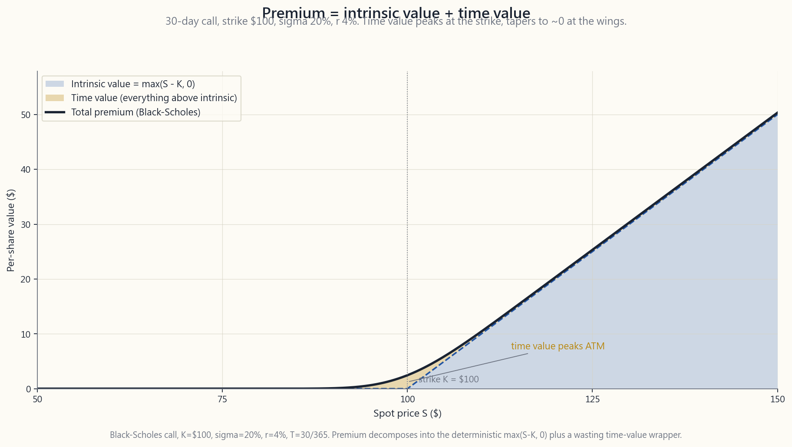
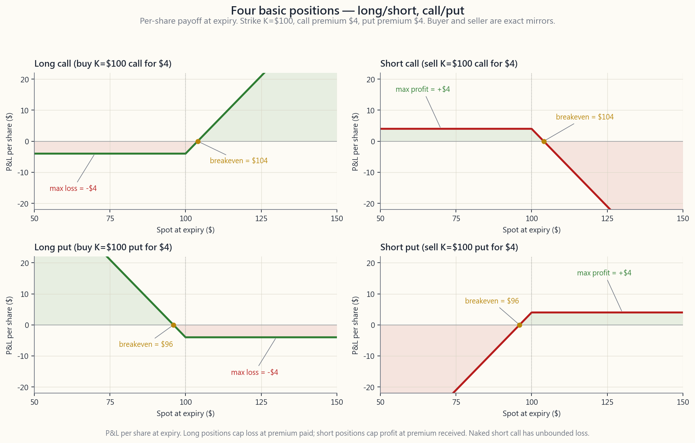

Week 25: Introduction to options — calls, puts, premium, intrinsic and time value
1. Why This Is Important
For twelve weeks the course was about owning things. For the next six weeks it is about owning contracts on things. An option is not a share, not a bond, not an index — it is a piece of paper that says "if certain conditions hold at a certain date, money changes hands." That is a stranger object than it sounds, and the only way to get comfortable with the strategies in weeks 26-30 is to spend a week inside the contract itself.
You need this lesson for four concrete reasons.
(1) The vocabulary is dense, and almost every word is a small trap. "Premium" means three different things depending on context. "ITM" is not the same idea for a call as for a put. "Exercise" and "assignment" are the same event seen from two sides of the trade. Most retail blow-ups in options come from people who learned the strategy before they learned the vocabulary, and end up holding a position whose mechanics they cannot describe in one sentence. Spend the week on the words; the strategies are easy after.
**(2) Premium decomposition is the engine behind every option income strategy.* Every option price has two pieces — intrinsic value* (real, frozen, immune to time) and time value (a wasting asset). The covered calls and cash-secured puts of weeks 26-28 are *time-value harvesting* trades. If you cannot look at a quote and tell those two numbers apart, you cannot tell whether a strategy is paying you to take risk or taking risk for free. The decomposition image in this lesson is the single most important picture in the second half of the course.
**(3) The four basic positions are a coordinate system, not four trades.** Long call, short call, long put, short put. Every option strategy you will meet for the rest of your life is a combination of those four — a vertical spread is two of them, an iron condor is four, a covered call is one of them plus 100 shares of stock. Internalise the four payoff shapes once and the rest of options is bookkeeping.
**(4) This is foundation for the barbell, the tax stack, and the vol-tail-wags-dog mechanic.** The barbell holds long-dated calls on the safety end and uses short near-dated puts/calls on the income middle — both are option positions. The tax stack reaches for options because they let you reshape exposure without realising a sale. The vol-tail mechanic only makes sense once you understand that dealers hedge the options they sell, and that hedging flow moves the spot. Without this week, three pieces of the broader investing playbook remain abstract.
2. What You Need to Know
2.1 An option is a contract — right on one side, obligation on the other
An option is a contract between two parties:
- A buyer (also "long" or "holder") who pays a premium in cash
- A seller (also "short" or "writer") who receives that premium,
The right and the obligation are exact mirrors. If the buyer chooses to use the right, the seller is forced to deliver. The whole edifice of options pricing is just the question *"how much should the buyer pay the seller for taking on that obligation?"*
There are exactly two flavours.
A call is the right to buy the underlying at a fixed price. You buy a call when you want upside exposure to the stock without putting up the full share price.
A put is the right to sell the underlying at a fixed price. You buy a put when you want a floor under the stock — protection, or a directional bet that it will fall.
A complete US-listed equity option is identified by five fields:
SPY, AAPL).happens if the right is exercised.
A typical broker-screen quote: AAPL 16-Jan-2026 200 C @ 8.50 / 8.65.
Read this as *"AAPL January-16-2026, $200 strike, call. Bid 8.50, ask
8.65."* That single line contains all five identifiers plus the live
market for the contract.
2.2 The contract is for 100 shares — and the premium is per share
The most common stumble for a new options trader is the units. US listed equity options are standardised at 100 shares per contract. The premium is quoted per share, not per contract. To get the dollar amount that actually moves in your account, multiply by 100.
For the AAPL example above, "ask 8.65" means $865 per contract ($8.65 x 100). One contract gives the buyer the right to buy 100 shares of AAPL at $200 each — a $20,000 notional position — for an upfront payment of $865. That is the leverage.
Two consequences fall out of the 100-share spec:
- Anything below $20,000 of stock notional and you can't buy/sell
- Account size matters. A cash-secured put at the $200 strike
The 100-share unit is also why every example in this course quotes position size in contracts rather than dollars — saying "sell 1 $200 SPY put" is unambiguous; saying "sell $20,000 worth" requires arithmetic at every step.
2.3 Moneyness — ITM, ATM, OTM
The relationship between the strike K and the current spot S
defines the option's moneyness.
For a call, "moneyness" measures how far above the strike the spot is — i.e. how much real value the right contains right now:
| Term | Condition (call) | Intrinsic value |
|---|---|---|
| In-the-money (ITM) | S > K | S - K |
| At-the-money (ATM) | S ~= K | ~0 |
| Out-of-the-money (OTM) | S < K | 0 |
For a put, the inequalities flip — the right is to sell at K, which is valuable when spot is below K:
| Term | Condition (put) | Intrinsic value |
|---|---|---|
| In-the-money (ITM) | S < K | K - S |
| At-the-money (ATM) | S ~= K | ~0 |
| Out-of-the-money (OTM) | S > K | 0 |
A call ITM is a put OTM at the same strike, and vice versa. For a call at K=100 with spot at S=110: the call is $10 ITM (intrinsic value $10), and the corresponding put at the same strike is $10 OTM (intrinsic value 0). They are sides of the same coin.
Three practical observations.
ATM options have the most time value. They are the closest to the boundary between worth-something and worth-nothing, so the "insurance premium" the seller charges for being on the wrong side of a small move is largest there. For premium-sellers (weeks 26-28), ATM contracts pay the most absolute premium per day; for tail-hedge buyers (week 29), OTM contracts pay the most leverage per dollar of premium.
Deep ITM options behave almost like the stock itself (delta near 1 for calls, near -1 for puts) — they are leverage substitutes more than they are options. Deep OTM options behave almost like lottery tickets — most expire worthless, a few pay 5-50x when the tail event happens.
The "moneyness" axis is one of the two main axes of the option chain (the other is expiry). Every screenshot of an options chain in this course is a 2D grid: strikes down, expirations across.
2.4 Premium = intrinsic value + time value
Every option premium decomposes into exactly two pieces.
Intrinsic value is what you would receive if you exercised the
option right now. It is the moneyness, in dollars. It cannot be
negative (you would simply not exercise) — it is max(S - K, 0) for
a call, max(K - S, 0) for a put.
Time value (also called extrinsic value) is everything else. It is the premium paid over the intrinsic value, and it compensates the seller for the risk that, between now and expiry, the option ends up further in-the-money than it is today. Time value depends on three things:
for the spot to move, so more time value. Time value decays toward zero as expiry approaches; the decay accelerates in the final 2-3 weeks (the "theta wall").
future range = more time value. IV is the option market's forecast of the underlying's volatility through expiry.
deferred-purchase, so higher rates make a call slightly more valuable; the put is a deferred-sale, so higher rates make a put slightly less valuable. This effect is usually small for front-month options.
The image below shows premium decomposition for a 30-day call at
strike $100 with sigma=20% and r=4%, across spots from $50 to $150.
The shaded intrinsic area is the linear max(S - K, 0) payoff;
the shaded time value sits on top. Notice how time value is
largest at the strike and tapers to near-zero at both ends.

The reason ATM time value peaks is symmetry. At spot = strike, the option has equal odds of expiring on either side of the strike, so the seller is taking the most actuarial uncertainty per dollar of premium and charges accordingly. Far ITM, the option is "almost certainly going to be exercised" — its price is mostly real intrinsic, with a thin wrapper of optionality. Far OTM, the option is "almost certainly going to expire worthless" — its price is a small lottery-ticket wrapper with no intrinsic.
This decomposition is the single most useful framing in this whole half of the course. Premium-selling strategies (weeks 26, 27, 28) make money when the time-value piece decays to zero. Premium-buying strategies (week 29 protective puts, week 30 long calls as substitutes) pay for that time value up front and need the spot to move enough to recover it.
2.5 Expiry — weekly, monthly, LEAPS, and American vs European
US listed equity options come in three calendar flavours:
- Weekly options ("weeklies") expire every Friday. Most
- Monthly options expire on the third Friday of the month.
- LEAPS (Long-term Equity AnticiPation Securities) are
Two exercise styles matter for retail:
- American style. The right can be exercised on any business
- European style. The right can only be exercised *on the
For most retail option strategies, the practical difference is small because early exercise is almost always suboptimal — exercising early throws away the remaining time value. The two cases where American-style early exercise actually happens: deep-ITM puts (the holder gets cash earlier) and the day before a large dividend on a deep-ITM call (the holder captures the dividend). These edge cases matter for the seller of those contracts — you can be assigned unexpectedly. We treat them as they come up in week 27.
Settlement is also worth knowing. Equity options settle physically: exercise of an AAPL call delivers 100 shares of AAPL. Index options settle in cash: exercise of an SPX put pays out the difference between strike and settlement value, no shares change hands. This matters when sizing — a deep-ITM SPX put pays cash on Friday; a deep-ITM SPY put delivers a short stock position that has to be closed by Monday.
2.6 The four basic positions
Strip away all the strategy names and there are exactly four positions a retail account can take in a single contract: long call, short call, long put, short put. Every strategy in weeks 26-30 is either one of these four or a combination of them with the underlying stock.
The image below is the 2x2 grid of payoff diagrams at expiration for those four. Each panel shows P&L per share as a function of spot at expiry, with breakeven, max profit, and max loss annotated.

A one-line summary of each:
Long call. Pay premium c for the right to buy at K. Max loss
= c (option expires worthless). Breakeven at expiry: K + c.
Upside unbounded above breakeven. Use case: directional bullish
bet with capped loss; LEAPS-as-stock-substitute on the safe end of
the barbell.
Short call. Receive premium c, take on obligation to sell at
K. Max gain = c. Breakeven at expiry: K + c. Loss unbounded
above breakeven. Naked short calls are dangerous. Covered
calls (with 100 shares as collateral, week 27) cap the loss at
"the unrealised gain you didn't get to keep" — bounded, not
unbounded.
Long put. Pay premium p for the right to sell at K. Max loss
= p. Breakeven at expiry: K - p. Max gain = K - p (spot goes
to zero). Use case: portfolio insurance (week 29), bearish
directional bet, vol-spike trades.
Short put. Receive premium p, take on obligation to buy at K.
Max gain = p. Breakeven at expiry: K - p. Max loss = K - p
(spot goes to zero — the seller still has to buy at K). Naked
short puts are dangerous in size; cash-secured puts (week 28)
have the full collateral set aside and the loss is bounded — and
identical, in P&L terms, to a limit-buy order at K filled at
K - p. This is one of the most useful retail option positions.
The four positions plus the underlying stock (long shares, short shares) give six primitives. Every named strategy you will see — covered call, cash-secured put, vertical spread, iron condor, collar, straddle, strangle, calendar — is a combination of those six. Memorise the four payoff shapes; the rest is bookkeeping.
2.7 Where this lesson fits — barbell, tax, and the vol tail
Three pieces of Horace's broader investing playbook lean directly on the foundation laid this week.
The barbell. The safe end of Horace's barbell uses long-dated, deep-ITM calls (LEAPS) as a capital-efficient share substitute — you control the upside of 100 shares with 20% of the capital, the loss is capped at the premium, and you free up cash for the speculative end. The income middle (the L2 sleeve) writes short calls and short puts against quality names to harvest time value. Both ends of the barbell are options; the lesson this week is the dictionary that lets you read either end.
Options as a tax tool. The covered call lets you reduce delta on a winner without selling the share — the lot keeps aging toward long-term-capital-gains treatment, no taxable event, exposure shifts. The cash-secured put lets you build a position at a chosen entry over multiple expiries, with each unfilled expiration banking premium that lowers the eventual cost basis. Both depend on the time-value/intrinsic-value split from §2.4 — the part being harvested is the time value.
The option tail wags the equity dog. Dealers who sell options to retail and institutions hedge their books in the underlying stock. Their hedge depends on the option's delta, which itself depends on spot, strike, IV, and time. When spot moves, deltas move, dealer hedges move — and that mechanical hedging flow moves the spot further. The 2021 GameStop squeeze was that mechanism running in reverse: retail bought calls, dealers were forced to buy spot to hedge, the spot ran, and the rally was self-reinforcing until the calls expired. We will not work the math of dealer hedging in this course, but you cannot understand modern US equity microstructure without knowing that the option chain is no longer a sideshow to the spot tape. It is increasingly the cause of the spot tape.
The interactive lab for this week (course/interactive/week25_option_explorer.html) lets you pick any of the four positions, drag the strike, expiry, volatility, rate, and spot sliders, and watch the premium decomposition update in real time alongside the at-expiry payoff. Spend twenty minutes in it before reading week 26. Six weeks of strategy material rest on those five sliders.
3. Common Misconceptions
instruments. The median outcome of buying an OTM front-month call is total loss of the premium. Single-call buyers historically underperform — sometimes by enormous margins — buy-and-hold investors in the same name. Calls are tools, not lottery tickets, and the cases where they make sense (LEAPS substitutes, targeted event trades) are narrow.
options are risky for retail. Long calls, long puts, covered calls, and cash-secured puts have bounded, fully-knowable worst cases at the moment you place the trade. The biggest risk in options is the gap between what the strategy actually does and what the trader thinks it does — fix that gap and the risk profile is no scarier than the stock itself.
cost only if you're the buyer. If you're the seller, the premium is your income — and the cost is the obligation you took on. Every dollar of premium has two signs depending on which side of the trade you're sitting on. Half the lesson is noticing that.
Cheap and safe are different. A $0.10 OTM call is cheap in absolute dollars, but it has a ~95% probability of expiring worthless. Buying a basket of cheap OTM calls is one of the most consistent ways retail traders bleed capital. Cheap measures dollars per contract; safe measures probability of loss.
ATM options are all time value and time value is largest at the strike. An ATM 30-day option on SPY is one of the most valuable single contracts in the chain — not despite zero intrinsic, because of maximum time value. Don't confuse "no intrinsic value" with "no value."
retail traders, exercising is almost always wrong. Exercising throws away the remaining time value; instead you *sell to close* the option in the market and capture both intrinsic and time value. Exercise is a settlement event handled by the broker on the few cases where it's optimal. Beginners who reflexively exercise ITM longs leave money on the table.
any time."** Slightly more valuable in theory; in practice essentially identical to European on equity. The American-style premium is real for deep-ITM puts and dividend-day calls; for most front-month at- or near-the-money positions, it is a rounding error.
single most common rookie mistake is reading "premium 8.50" as "$8.50 to buy" rather than "$850 to buy." Always multiply.
LEAPS behave very differently. Most of their value is intrinsic (or near-intrinsic with low theta). Vega is the dominant Greek, not theta. They are leverage instruments far more than they are pure optionality. Strategies that work with monthlies (premium-selling, gamma scalping) often don't work with LEAPS, and vice versa.
The Greeks are calculus on top of the four payoff shapes; if the four shapes aren't second nature, the Greeks are incomprehensible. Learn the four positions first. Greeks come in week 26 onward, in context, when they matter.
4. Q&A Section
**Q1: I keep getting confused by "long" and "short" in options. Can you give me a one-line rule?**
A: *Long = paid the premium up-front and now hold a right. Short = received the premium and now hold an obligation.* Long anything (call or put) means you are the buyer; short anything means you are the seller/writer. The direction of the underlying view is independent — "long the stock" goes up means up; "long a put" goes up means the stock went down. Don't merge the two dimensions.
**Q2: Why do options expire? Wouldn't they be more useful if they didn't?**
A: Without expiry there would be no time-value premium and no seller would write contracts at a positive price. Expiry is what turns an option from a permanent right (which would be priceless) into a finite, tradeable contract. The seller is being paid for the finite window of risk; without that window there is nothing to be paid for.
Q3: How do I read a chain quote like AAPL 1/16/26 200C 8.50/8.65?
A: Underlying = AAPL; expiry = January 16, 2026; strike = $200; type = Call; bid = $8.50, ask = $8.65 per share. To trade one contract the buyer pays the ask x 100 = $865; the seller receives the bid x 100 = $850. The $15 spread is the market-maker's compensation for quoting both sides.
Q4: Why does ATM have the most time value?
A: Because at the strike, the option has equal odds of expiring on either side of the strike, so the *uncertainty per dollar of premium* is largest there. Move spot $20 above K — the call is now "almost certainly exercised" and the time-value wrapper shrinks. Move spot $20 below K — the call is now "almost certainly worthless" and the time-value wrapper shrinks. The peak is at the strike for the same reason a flipped coin's outcome is most uncertain when it's spinning.
Q5: Should I exercise or sell my in-the-money long option?
A: Almost always sell, never exercise. Exercising throws away the remaining time value; selling captures both intrinsic and time value. The only retail exception is if you actually want the 100 shares of stock and the option is past the ex-dividend date or nearly at expiry — and even then, "exercise + immediately sell" and "sell the option" net to roughly the same dollars after spreads.
Q6: What does it mean to "be assigned"?
A: Assignment is the seller-side event where the buyer chose to exercise. As the seller, you are forced to deliver the underlying (short call -> forced to sell 100 shares; short put -> forced to buy 100 shares). Assignment can happen any business day for American- style equity options, but in practice almost always at or near expiry. Cash-secured puts and covered calls treat assignment as the intended outcome, not a failure mode.
Q7: Can I lose more than I put in?
A: It depends on the position. Long calls and long puts: max loss
is the premium paid — full stop. Short covered calls: max loss is
"the upside you didn't capture" — bounded. Short cash-secured
puts: max loss is (strike x 100) - premium, fully collateralised.
Naked short calls: theoretically unlimited (don't do it without
deep training and clear risk limits). Naked short puts: bounded but
larger than the collateral typically posted on margin (also avoid
without training).
Q8: How is implied volatility different from realised volatility?
A: Realised vol = how much the stock has actually moved over a recent window (a backward-looking measurement). Implied vol = the volatility figure that, plugged into the Black-Scholes formula, returns the option's current market price (a forward-looking forecast embedded in the price). When IV > recent realised, the options market expects movement to pick up; when IV < realised, the market expects calm to return. The gap between the two is one of the oldest signals in derivatives.
Q9: Why 30-45 days to expiry for retail premium-selling?
A: Theta — the rate of time-value decay — is fastest in the 21-45 DTE band. Shorter than 21 days and the daily premium is small per contract for the capital tied up; longer than 45 days and the daily decay slows down meaningfully and you're locking up collateral for a smaller daily yield. The 30-45 DTE band has been the empirical sweet spot for retail premium-sellers for decades; SPY weeklies and 30-day monthlies are the workhorse contracts.
Q10: What's the smallest options account that makes sense?
A: Roughly $25,000-$50,000 to do cash-secured puts and covered calls on liquid US ETFs (SPY, QQQ, IWM) with one or two contracts at a time. Below that, the 100-share contract size forces you into penny names where the bid-ask spread eats the premium. Below $10,000, options are not the right tool — stick to share-buying discipline. The contracts are not scaled for very small accounts.
Q11: I've heard "options trading is zero-sum." Is that true?
A: Yes, in dollars before fees. Every dollar a buyer makes is a dollar a seller loses, and vice versa, for any single contract. This is different from the stock market, which is positive-sum (companies generate cash flows). In options, you are negotiating who takes which slice of an existing risk. After fees and bid-ask spreads, options are negative-sum. This is why the strategy matters more than the prediction — being on the right side of the asymmetry beats being right about direction.
**Q12: When does this lesson stop being theoretical and start being useful?**
A: Week 26. Every concept introduced this week — premium = intrinsic + time, the four positions, ITM/ATM/OTM, weekly vs monthly vs LEAPS — gets used immediately in week 26 (options as limit orders), week 27 (covered calls), week 28 (cash-secured puts), week 29 (protective puts), week 30 (LEAPS-as-stock). This is the dictionary week. Keep the interactive open in another tab while you read the next five.
第25週：期權入門——認購期權、認沽期權、期權金、內在價值與時間值
1. 為何本週內容至關重要
課程過去十二週講的都是「持有資產」。接下來六週，講的是「持有資產合約」。期權既非股份，亦非債券，亦非指數——它是一張紙，寫明「若在某個日期前某些條件成立，金錢便會易手」。這個概念比聽起來更陌生，而要在第26至30週掌握各種策略，就必須花一整週深入了解合約本身。
你需要本週課程，有以下四個具體原因。
(1) 術語繁複，幾乎每個詞都是小陷阱。「期權金」視乎語境有三種不同含義。「價內」對認購期權和認沽期權的意思並不相同。「行使」與「被指派」是同一事件從交易兩端看到的不同面貌。大多數散戶在期權上爆倉，都是因為先學策略、後學術語，最終持有一個自己無法用一句話描述機制的倉位。花一週時間把術語搞清楚，之後的策略便易如反掌。
(2) 期權金分解是每個期權收益策略的核心引擎。每個期權價格都由兩部分組成——內在價值（真實、固定、不受時間影響）和時間值（一種消耗性資產）。第26至28週的備兌認購期權和現金擔保認沽期權，本質上都是收割時間值的交易。若你看一個報價時無法分辨這兩個數字，你便無法判斷某個策略是在為你承擔風險而付費，還是在免費為你冒險。本週的期權金分解圖，是本課程下半段最重要的一張圖。
(3) 四個基本倉位是一個座標系，而非四筆獨立交易。長倉認購期權、短倉認購期權、長倉認沽期權、短倉認沽期權。往後你在生命中遇到的每一個期權策略，都是這四種的組合——垂直價差是其中兩種，鐵鷹式策略是其中四種，備兌認購期權是其中一種加100股股票。把四種損益形態牢記心中，其餘的期權知識不過是記賬而已。
(4) 這是槓鈴策略、稅務疊加及波動率尾巴搖動現貨機制的基礎。槓鈴策略的安全端持有長期認購期權，收益中間段賣出短期認沽期權和認購期權以收割時間值——兩端都是期權倉位。稅務疊加借助期權是因為它們讓你在不產生出售應稅事件的情況下重塑風險敞口。波動率尾巴機制只有在理解莊家對沖其所賣期權後，才能說得通，而對沖流量正是推動現貨價格的力量。若略過本週，整個更廣泛投資策略中的三個環節將仍停留在抽象層面。
2. 你需要掌握的知識
2.1 期權是一份合約——一方持有權利，另一方承擔義務
期權是兩方之間的合約：
- 買方（亦稱「長倉」或「持有人」）預先以現金支付期權金，換取一項權利。
- 賣方（亦稱「短倉」或「沽立者」）收取期權金，換取承擔一項義務。
期權只有兩種類型。
認購期權是以固定價格買入標的資產的權利。當你希望獲得股票上行風險敞口，卻不想付出全部股價時，便買入認購期權。
認沽期權是以固定價格賣出標的資產的權利。當你希望為股票設置底部——即保護，或押注股價下跌時，便買入認沽期權。
一份完整的美國上市股票期權，由五個欄位識別：
SPY、AAPL）。
典型的經紀平台報價：AAPL 16-Jan-2026 200 C @ 8.50 / 8.65。解讀為「AAPL，2026年1月16日，行使價200美元，認購期權。買盤價8.50，賣盤價8.65。」這短短一行包含所有五個識別欄位，以及該合約的即時市場報價。
2.2 合約對應100股——且期權金以每股計算
期權新手最常犯的錯誤，就是單位問題。美國上市股票期權均標準化為每張合約100股。期權金以每股報價，而非每張合約。要得出實際在賬戶中流動的美元金額，需乘以100。
以上述AAPL例子，「賣盤價8.65」意指每張合約865美元（8.65 x 100）。一張合約賦予買方以200美元購買100股AAPL的權利——名義倉位達20,000美元——而前期支付僅865美元。這就是槓桿的來源。
100股規格帶出兩個實際影響：
- 任何低於20,000美元股票名義倉位的情況，你都無法買賣分數張合約。沒有半張合約。若策略需要50股對沖，期權並非合適工具。
- 賬戶規模至關重要。行使價200美元的現金擔保認沽期權，佔用20,000美元按金。若整個賬戶只有30,000美元，這個策略只適合在SPY或QQQ等較大型品種中使用，並可深入價外位置，使5,000美元的按金承諾更為合理。
2.3 價內外程度——價內、等價、價外
行使價K與現貨價S之間的關係，決定了期權的價內外程度。
對認購期權而言，「價內外程度」衡量現貨超出行使價的程度——即權利目前所含的真實價值：
| 術語 | 條件（認購期權） | 內在價值 |
|---|---|---|
| 價內（ITM） | S > K | S - K |
| 等價（ATM） | S ≈ K | ≈0 |
| 價外（OTM） | S < K | 0 |
對認沽期權而言，不等式反轉——以K賣出的權利，在現貨低於K時才有價值：
| 術語 | 條件（認沽期權） | 內在價值 |
|---|---|---|
| 價內（ITM） | S < K | K - S |
| 等價（ATM） | S ≈ K | ≈0 |
| 價外（OTM） | S > K | 0 |
同一行使價下，認購期權價內即認沽期權價外，反之亦然。以行使價K=100、現貨S=110的認購期權為例：認購期權價內10美元（內在價值10美元），而同一行使價的認沽期權價外10美元（內在價值0）。兩者是同一枚硬幣的兩面。
三個實際觀察。
等價期權擁有最多的時間值。它們最接近「有價值」與「毫無價值」的分界線，因此賣方為承擔小幅波動後站在不利一方所收取的「保險費用」，在此最為可觀。對於期權金賣出方（第26至28週），等價合約每日收取的絕對期權金最高；對於尾部對沖的買入方（第29週），價外合約每單位期權金所帶來的槓桿最大。
深度價內期權的表現幾乎與股票本身相同（認購期權的對沖值接近1，認沽期權接近-1）——它們更接近槓桿替代品而非純粹期權。深度價外期權的表現則幾乎像彩票——大多數到期一文不值，少數在尾部事件發生時帶來5至50倍回報。
「價內外程度」軸是期權鏈的兩條主軸之一（另一條是到期日）。本課程每張期權鏈截圖均為二維格柵：行使價縱向排列，到期日橫向排列。
2.4 期權金 = 內在價值 + 時間值
每個期權金都可精確分解為兩個部分。
內在價值是假如你立即行使期權所能獲得的金額。它就是以美元計算的價內外程度。它不能為負數（你根本不會行使）——認購期權為max(S - K, 0)，認沽期權為max(K - S, 0)。
時間值（亦稱外在價值）是其餘一切。它是高於內在價值的溢價部分，用以補償賣方所承擔的風險——即在現在至到期日之間，期權的價內程度可能進一步加深的風險。時間值取決於三個因素：
下圖展示了一個30天期認購期權在行使價100美元、sigma=20%、r=4%條件下，現貨從50美元至150美元的期權金分解圖。陰影內在價值區域是線性的max(S - K, 0)到期回報；陰影時間值置於其上。注意時間值在行使價處最大，並向兩端逐漸收窄至接近零。
等價期權時間值達到峰值的原因在於對稱性。當現貨等於行使價時，期權到期時位於行使價任一側的概率相等，因此賣方每單位期權金所承擔的精算不確定性最大，收費亦相應最高。深度價內時，期權「幾乎確定會被行使」——其價格大部分為真實的內在價值，只有薄薄一層可選擇性溢價。深度價外時，期權「幾乎確定會到期作廢」——其價格是一層小小的彩票式可選擇性溢價，不含任何內在價值。
這個分解框架是本課程下半段最有用的分析工具。期權金賣出策略（第26、27、28週）在時間值部分衰減至零時獲利。期權金買入策略（第29週保護性認沽期權、第30週作股票替代品的長期認購期權）則預先支付時間值，需要現貨足夠大幅移動才能收回成本。
2.5 到期日——每週、每月、長期期權，以及美式與歐式
美國上市股票期權有三種日曆類型：
- 每週期權（「週期」）每逢週五到期。大多數高成交量品種（SPY、QQQ、AAPL、NVDA等）在未來4至8週的每個週五均有週期。週期交易量巨大，是短期對沖和Gamma交易的主力合約。
- 月期在每月第三個週五到期。這是歷史上的預設選擇；月期未平倉合約最多、買賣差價最緊、掛牌行使價最多。距到期30至45天的月期，是散戶期權金賣出的標準合約。
- 長期期權（Long-term Equity AnticiPation Securities）是到期日超過9個月的期權。在最活躍的品種上，到期日可長達約2.5年。長期期權是槓鈴策略安全端長倉認購期權作股票替代品交易的基礎建構模塊——它們讓你以約15至25%的股價控制100股股票，損失有上限，並可讓倉位達到長期資本增值稅務待遇所需的持有期。
- 美式。可在購買日至到期日（含）之間的任何交易日行使。所有美國上市股票期權（AAPL、SPY、QQQ等）均為美式。
- 歐式。只能在到期日當天行使。美國上市現金結算指數期權（SPX、NDX、RUT）均為歐式。
結算方式亦值得了解。股票期權以實物結算：行使AAPL認購期權即交付100股AAPL股份。指數期權以現金結算：行使SPX認沽期權，支付行使價與結算價值之差，不涉及股份轉讓。這在倉位規模上具有實際影響——深度價內的SPX認沽期權在週五支付現金；深度價內的SPY認沽期權則交付一個必須在週一前平掉的股票短倉。
2.6 四個基本倉位
拋開所有策略名稱，散戶賬戶在單張合約上只能持有恰好四種倉位：長倉認購期權、短倉認購期權、長倉認沽期權、短倉認沽期權。第26至30週的每個策略，要麼是這四種之一，要麼是它們與標的股票的組合。
下圖是這四種到期時損益圖的2×2格柵。每個面板顯示每股損益對到期時現貨的函數關係，並標注了損益平衡點、最大盈利和最大虧損。
每種倉位的單句概述：
長倉認購期權。支付期權金c，換取以K買入的權利。最大虧損 = c（期權到期作廢）。到期損益平衡點：K + c。損益平衡點以上回報無限。使用場景：以有限虧損為上限的方向性看好押注；槓鈴策略安全端的長期期權作股票替代品。
短倉認購期權。收取期權金c，承擔以K賣出的義務。最大盈利 = c。到期損益平衡點：K + c。損益平衡點以上虧損無限。裸倉短倉認購期權極為危險。備兌認購期權（以100股股票作按金，第27週）將虧損上限限制為「未能保留的未實現盈利」——有限，而非無限。
長倉認沽期權。支付期權金p，換取以K賣出的權利。最大虧損 = p。到期損益平衡點：K - p。最大盈利 = K - p（現貨跌至零）。使用場景：投資組合保險（第29週）、方向性看跌押注、波動率飆升交易。
短倉認沽期權。收取期權金p，承擔以K買入的義務。最大盈利 = p。到期損益平衡點：K - p。最大虧損 = K - p（現貨跌至零——賣方仍須以K買入）。裸倉短倉認沽期權在大規模持倉時極為危險；現金擔保認沽期權（第28週）預先存入全額按金，虧損有限——且在損益角度而言，與在K - p成交的K限價買盤完全相同。這是散戶最實用的期權倉位之一。
四個倉位加上標的股票（長倉股票、短倉股票），共有六個基本要素。你將看到的每一個命名策略——備兌認購期權、現金擔保認沽期權、垂直價差、鐵鷹式策略、護領策略、跨式組合、勒束式組合、日曆價差——都是這六種要素的組合。牢記四種損益形態；其餘不過是記賬。
2.7 本週課程的定位——槓鈴、稅務與波動率尾巴
陳馬的整體投資策略有三個環節，直接依賴本週所建立的基礎。
槓鈴策略。陳馬的槓鈴策略安全端使用長期、深度價內認購期權（長期期權）作為資本高效的股份替代品——以20%的資本控制100股的上行空間，損失以期權金為上限，並將現金騰出用於投機端。收益中間段（L2板塊）對優質品種賣出短倉認購期權和認沽期權以收割時間值。槓鈴兩端都是期權；本週課程是解讀兩端的字典。
期權作為稅務工具。備兌認購期權讓你在不出售股份的情況下降低對升值股票的對沖值——該批股份繼續計算向長期資本增值稅務待遇的持有期，無應稅事件，風險敞口隨之調整。現金擔保認沽期權讓你在多個到期週期中以選定入場價建倉，每次到期未觸發的期權金入賬，降低最終的成本基礎。兩者均依賴§2.4中的時間值與內在價值分解——被收割的部分正是時間值。
期權尾巴搖動股票現貨狗。向散戶和機構賣出期權的莊家會對沖其帳簿。其對沖取決於期權的對沖值，而對沖值本身取決於現貨、行使價、引伸波幅和時間。現貨移動，對沖值移動，莊家對沖移動——而這機械式的對沖流量進一步推動現貨移動。2021年GameStop軋空正是這一機制的逆向運行：散戶買入認購期權，莊家被迫買入現貨對沖，現貨上漲，漲勢自我強化，直至認購期權到期。本課程不深入講解莊家對沖的數學，但若不了解期權鏈已不再是現貨市場的配角，你便無法解讀現代美國股票市場微觀結構。它越來越多地成為現貨的成因。
本週互動實驗室（interactive/week25_option_explorer.html）讓你選擇四種倉位中的任意一種，拖動行使價、到期日、波動性、利率和現貨滑桿，並即時觀察期權金分解——內在價值、時間值、合計——隨之更新，同時疊加顯示到期損益圖。在閱讀第26週之前，在此花二十分鐘。六週的策略內容都建立在這五個滑桿之上。
3. 常見誤解
4. 問答環節
問題1：我一直搞不清楚期權中的「長倉」和「短倉」。能給我一個一句話的規則嗎？
答：長倉 = 預先支付期權金、現在持有權利。短倉 = 收取期權金、現在承擔義務。長倉任何期權（認購期權或認沽期權），即你是買方；短倉任何期權，即你是賣方/沽立者。對標的資產的方向性觀點是獨立的——「股票長倉」上漲是贏；「認沽期權長倉」上漲是因為股票下跌。不要把兩個維度混在一起。
問題2：為什麼期權有到期日？如果沒有到期日，豈不是更有用？
答：若沒有到期日，便不會有時間值溢價，賣方也不會以正值寫出合約。到期日是將期權從一項永久性權利（那將是無價之寶）轉化為有限、可交易合約的關鍵。賣方是為承擔有限時間窗口內的風險而獲得報酬；沒有這個時間窗口，便沒有報酬可言。
問題3：如何解讀期權鏈報價，例如AAPL 1/16/26 200C 8.50/8.65？
答：標的資產 = AAPL；到期日 = 2026年1月16日；行使價 = 200美元；類型 = 認購期權；買盤價 = 8.50美元，賣盤價 = 8.65美元（均以每股計算）。買方買入一張合約須支付賣盤價 × 100 = 865美元；賣方收取買盤價 × 100 = 850美元。15美元的差價是莊家提供雙邊報價的報酬。
問題4：為什麼等價期權的時間值最大？
答：因為在行使價處，期權到期時位於行使價任一側的概率相等，因此每單位期權金所帶來的不確定性最大。現貨移動至K以上20美元——認購期權「幾乎確定會被行使」，時間值外殼收縮。現貨移動至K以下20美元——認購期權「幾乎確定會到期作廢」，時間值外殼同樣收縮。峰值出現在行使價處，原因與拋起的硬幣在旋轉時結果最不確定相同。
問題5：我的價內長倉期權，應該行使還是賣出？
答：幾乎永遠是賣出，而非行使。行使會損失剩餘的時間值；賣出則同時捕捉內在價值和時間值。散戶例外情形只有：你確實想持有100股股票，且期權已過除息日或接近到期——即便如此，「行使後立即賣出股票」與「賣出期權」在扣除差價後，所得金額也大致相同。
問題6：「被指派」是什麼意思？
答：被指派是賣方一側的事件，即買方選擇行使期權。作為賣方，你被強制交付標的資產（短倉認購期權 → 被強制以K賣出100股；短倉認沽期權 → 被強制以K買入100股）。美式股票期權可在任何交易日被指派，但實際上幾乎總是在到期日或臨近到期時發生。現金擔保認沽期權和備兌認購期權將被指派視為預期結果，而非失敗情形。
問題7：我的虧損可能超過投入金額嗎？
答：視乎倉位而定。長倉認購期權和長倉認沽期權：最大虧損為已付期權金——僅此而已。短倉備兌認購期權：最大虧損為「未能保留的上行收益」——有限。短倉現金擔保認沽期權：最大虧損為（行使價 × 100）- 期權金，全額按金已預先存入。裸倉短倉認購期權：理論上無限（未經深入培訓和明確風險限制，切勿嘗試）。裸倉短倉認沽期權：有限但大於保證金賬戶通常存入的按金（同樣避免未經培訓時嘗試）。
問題8：引伸波幅與已實現波幅有何不同？
答：已實現波動性 = 股票在近期時間窗口內的實際波動幅度（一個回望性的衡量）。引伸波幅 = 將某個波動率數字代入Black-Scholes公式，使其輸出期權的當前市場價格的那個數值（一個嵌入在價格中的前瞻性預測）。當引伸波幅高於近期已實現波動性，期權市場預期波動將加劇；當引伸波幅低於已實現波動性，市場預期將趨於平靜。兩者之間的差距是衍生工具界最古老的信號之一。
問題9：為何散戶賣出期權金的最佳到期日是30至45天？
答：Theta——時間值衰減的速度——在距到期21至45天的區間最快。短於21天，每張合約每日收取的期權金相對於佔用的資本而言偏少；長於45天，每日衰減速度明顯放緩，你在較低的日收益率下佔用了更長時間的按金。30至45天到期日區間在數十年間一直是散戶賣方的最優甜蜜點；SPY週期和30天月期是主力合約。
問題10：期權操作的最低賬戶規模是多少？
答：大約25,000至50,000美元，用於在高流動性美國ETF（SPY、QQQ、IWM）上進行一至兩張合約的現金擔保認沽期權和備兌認購期權。低於此規模，100股的合約單位將迫使你進入細價股，而買賣差價會蠶食期權金。低於10,000美元，期權並非合適工具——堅持買入股份紀律。這些合約並非為規模極小的賬戶而設。
問題11：我聽說「期權交易是零和博弈」。這是真的嗎？
答：是的，在扣除費用前以美元計算是零和。對任何一張合約而言，買方每賺一美元，賣方便虧一美元，反之亦然。這與股票市場不同——股票市場是正和的（企業產生現金流）。期權中，你在談判的是誰承擔現有風險的哪個部分。扣除費用和買賣差價後，期權是負和的。這正是策略重要性超過預測的原因——站在非對稱的有利一側，比方向正確更重要。
問題12：本週課程何時停止停留在理論層面，開始實際有用？
答：第26週。本週引入的每個概念——期權金 = 內在價值 + 時間值、四種倉位、價內/等價/價外、週期/月期/長期期權——將在第26週（期權作為限價盤）、第27週（備兌認購期權）、第28週（現金擔保認沽期權）、第29週（保護性認沽期權）、第30週（長期期權作股票替代品）中立即使用。這是詞典週。在閱讀接下來五週內容時，把互動實驗室開在另一個分頁。
第25週：選擇權入門——買權、賣權、權利金、內含價值與時間價值
1. 為什麼這很重要
過去十二週，本課程的主題是「擁有資產本身」。接下來的六週，主題將轉變為「擁有資產相關的合約」。選擇權不是股份、不是債券、不是股票指數——它是一張紙，上面寫著：「若在特定日期某些條件成立，金錢即發生移轉。」這個概念聽起來比實際更陌生，而要熟悉第26至30週的策略，唯一的方法就是花一週的時間深入了解合約本身。
你需要這堂課，有四個具體的理由。
(1) 這套術語密集，而且幾乎每個詞都是一個小陷阱。「權利金」依上下文不同有三種意思。「價內」這個概念，對買權與賣權的含義並不相同。「履約」與「被指定」是同一件事，只是從交易的兩端各自看到的樣貌。大多數散戶在選擇權上爆倉，都是因為在學會術語之前就先學策略，最後持有一個連自己都無法用一句話說清楚運作機制的部位。花一週的時間把詞搞懂；策略在那之後其實並不難。
(2) 權利金的拆解，是所有選擇權收益策略的核心引擎。每個選擇權的價格都由兩個部分組成——內含價值（真實、固定、不受時間影響）和時間價值（一種不斷耗損的資產）。第26至28週的掩護性買權與現金擔保賣權，都是「收割時間價值」的交易。如果你看到一個報價，卻無法分辨這兩個數字，就無法判斷一個策略是「付錢請你承擔風險」還是「免費承擔風險」。本課的權利金拆解圖，是本課程後半段最重要的圖表。
(3) 四種基本部位是一個坐標系，而不只是四種交易方式。多頭買權、空頭買權、多頭賣權、空頭賣權。你這輩子會遇到的每一種選擇權策略，都是這四者的組合——垂直價差是其中兩種，鐵禿鷹策略是四種，掩護性買權是其中一種加上100股股票。把這四種損益圖的形狀內化一次，選擇權其餘的部分就只是簿記而已。
(4) 這是啞鈴策略、稅務操作與波動率尾巴搖狗機制的基礎。啞鈴策略的安全端持有長期買權，而收益中段（L2 部位）則賣出近期的空頭賣權與空頭買權來收割時間價值——兩端都是選擇權部位。稅務操作之所以採用選擇權，是因為選擇權能讓你在不觸發出售事件的情況下，重新調整曝險。波動率尾巴搖動現貨的機制，只有在你理解了造市商如何避險自己賣出的選擇權，以及那些避險操作如何推動現貨價格之後，才能真正看懂。少了這一週，整個投資框架中的三個重要部分，都將停留在抽象的層次。
2. 你需要掌握的知識
2.1 選擇權是一份合約——一方擁有權利，另一方承擔義務
選擇權是兩造之間的合約：
- 買方（亦稱「多頭」或「持有人」），預先支付現金權利金，換取一項權利。
- 賣方（亦稱「空頭」或「寫入者」），收取該權利金，承擔一項義務。
選擇權只有確切的兩種類型。
買權是以固定價格買進標的資產的權利。當你想要在不支付全額股價的情況下，取得該股票的上漲曝險，就買進買權。
賣權是以固定價格賣出標的資產的權利。當你想要為持股設定下檔保護——無論是避險，還是押注股票將下跌——就買進賣權。
一個完整的美國上市股票選擇權，由五個欄位來識別：
SPY、AAPL）。
券商畫面上的典型報價：AAPL 16-Jan-2026 200 C @ 8.50 / 8.65。讀法為：「AAPL 2026年1月16日，履約價200美元，買權。買價8.50，賣價8.65。」 這一行包含了五個識別欄位，以及合約的即時市場報價。
2.2 合約以100股為單位——且權利金是以每股計算
新手選擇權交易者最常見的失誤，就是單位問題。美國上市股票選擇權標準化為每口合約100股。權利金是以每股報價，而非每口合約。要得到實際在帳戶中移動的金額，需乘以100。
以上述 AAPL 的例子，「賣價8.65」意味著每口合約865美元（8.65 x 100）。買進一口合約，買方即取得以200美元購買100股 AAPL 的權利——名目部位為20,000美元——而先期支出僅865美元。這就是槓桿所在。
100股規格帶來兩個後果：
- 無法買賣分數口合約。沒有半口合約這種東西。若策略需要50股的避險，選擇權並非合適的工具。
- 帳戶規模至關重要。 履約價200美元的現金擔保賣權，需綁定20,000美元的保證金。若整個帳戶只有30,000美元，這個策略就只適合在 SPY 或 QQQ 等規模較大的名稱上操作，並選擇夠遠的價外履約價，使5,000美元左右的保證金承諾具有合理性。
2.3 價位狀態——價內、價平、價外
履約價 K 與當前現貨價 S 之間的關係，決定了選擇權的價位狀態。
對買權而言，「價位狀態」衡量的是現貨高出履約價多少——也就是這份權利當下包含多少真實價值：
| 術語 | 條件（買權） | 內含價值 |
|---|---|---|
| 價內 (ITM) | S > K | S - K |
| 價平 (ATM) | S ~= K | ~0 |
| 價外 (OTM) | S < K | 0 |
對賣權而言，不等號方向相反——以K賣出的權利，在現貨低於 K 時才有價值：
| 術語 | 條件（賣權） | 內含價值 |
|---|---|---|
| 價內 (ITM) | S < K | K - S |
| 價平 (ATM) | S ~= K | ~0 |
| 價外 (OTM) | S > K | 0 |
在同一履約價下，買權價內即賣權價外，反之亦然。以履約價K=100、現貨S=110為例：買權價內10美元（內含價值10美元），而同一履約價的賣權則是價外10美元（內含價值為0）。它們是同一枚硬幣的兩面。
三個實務觀察。
價平選擇權的時間價值最高。 它們最接近「有價值」與「無價值」的邊界，因此賣方為「站錯邊就輸一小段價差」所收取的「保險費」在此最高。對於第26至28週的收取權利金交易者而言，價平合約每日收取的絕對權利金最多；對於第29週的尾部避險買方而言，價外合約每花一美元權利金所獲得的槓桿倍數最高。
深度價內選擇權的表現幾乎與股票本身相同（買權的 delta 接近1，賣權接近-1）——它們更像是槓桿替代品，而非嚴格意義上的選擇權。深度價外選擇權的表現則幾乎像彩票——大多數到期歸零，少數在尾部事件發生時給出5至50倍的報酬。
「價位狀態」軸是選擇權鏈的兩條主軸之一（另一條是到期日）。本課程中所有選擇權鏈的截圖，都是一個二維格：履約價縱向排列，到期日橫向排列。
2.4 權利金 = 內含價值 + 時間價值
每個選擇權的權利金，都可以精確拆解為兩個部分。
內含價值是你立即行使選擇權所能獲得的金額。即以金額表示的價位狀態。它不能為負數（你不會行使一個無利可圖的權利）——買權為 max(S - K, 0)，賣權為 max(K - S, 0)。
時間價值（亦稱外在價值）是其餘的一切。是在內含價值之上所支付的額外權利金，用以補償賣方在現在到到期日之間，現貨進一步深入價內的風險。時間價值取決於三個因素：
下圖顯示了一個30天、履約價100美元的買權（sigma=20%，r=4%）在現貨50至150美元之間的權利金拆解圖。陰影內含價值區域呈現線性的 max(S - K, 0) 損益；陰影時間價值疊加在上方。注意時間價值在履約價處最大，並向兩端逐漸趨近於零。
價平時間價值達到峰值的原因在於對稱性。當現貨等於履約價時，選擇權到期落在履約價兩側的機率相等，因此賣方每一元權利金所承擔的精算不確定性最高，定價也最高。深度價內時，選擇權「幾乎可以確定會被行使」——其價格主要是真實的內含價值，加上薄薄一層選擇權性質的包裝。深度價外時，選擇權「幾乎可以確定會到期歸零」——其價格是一層小小的彩票式包裝，沒有內含價值。
這個拆解方式是本課程後半段最有用的框架。收取權利金策略（第26、27、28週）的獲利，來自時間價值那塊衰減至零。購買權利金策略（第29週的保護性賣權、第30週的買權作為股票替代品）則預先支付時間價值，需要現貨充分移動才能回收。
2.5 到期日——週選擇權、月選擇權、長期期權，以及美式與歐式
美國上市股票選擇權有三種到期日類型：
- 週選擇權（「weeklies」）每週五到期。成交量大的主要標的（SPY、QQQ、AAPL、NVDA 等）在接下來4至8週內的每個週五都有週選擇權。週選擇權成交量龐大，是短期避險與 Gamma 交易的主力合約。
- 月選擇權在每月第三個週五到期。這是歷史上的預設到期設定；月選擇權具有最深的未平倉量、最窄的買賣價差，以及最多的履約價選項。30至45天到期日的月選擇權，是散戶收取權利金的標準合約。
- 長期期權 (LEAPS)（長期股票預期證券）是到期日超過9個月的選擇權。在最活躍的標的上，到期日可遠達約2.5年。長期期權是陳馬啞鈴策略安全端以買權替代持股交易的核心架構——讓你以股價的15至25%控制100股，下行風險有上限，且讓部位持續累積以達到長期資本利得的稅務處理資格。
- 美式。 可在購入日至到期日（含）的任何交易日行使。所有美國上市股票選擇權（AAPL、SPY、QQQ 等）均為美式。
- 歐式。 只能在到期日當天行使。美國上市的現金結算指數選擇權（SPX、NDX、RUT）為歐式。
結算方式也值得了解。股票選擇權採實物交割結算：行使 AAPL 買權，就交付100股 AAPL。指數選擇權採現金結算：行使 SPX 賣權，收取履約價與結算價之間的差額現金，不涉及股份交割。這在部位規模管理時很重要——深度價內的 SPX 賣權在週五付現金；深度價內的 SPY 賣權則會產生一個融券放空部位，必須在週一前平倉。
2.6 四種基本部位
去掉所有策略名稱，散戶帳戶在單一合約上只能建立確切的四種部位：多頭買權、空頭買權、多頭賣權、空頭賣權。第26至30週的每一個策略，都是這四種部位之一，或其與標的股票的組合。
下圖是這四種部位在到期時損益圖的2x2方格，每個格子顯示到期時每股損益與現貨的關係，並標注損益平衡點、最大獲利與最大虧損。
每種部位的一行摘要：
多頭買權。 支付權利金 c 換取以K買入的權利。最大虧損 = c（選擇權到期歸零）。到期損益平衡點：K + c。損益平衡點以上，上行獲利無限。使用情境： 有上限虧損的方向性看多押注；啞鈴策略安全端的長期期權作為持股替代品。
空頭買權。 收取權利金 c，承擔以K賣出的義務。最大獲利 = c。到期損益平衡點：K + c。損益平衡點以上，虧損無限。裸空買權極為危險。掩護性買權（以100股股票為擔保品，第27週）將虧損限定為「未能實現的帳面漲幅」——有上限，而非無限。
多頭賣權。 支付權利金 p 換取以K賣出的權利。最大虧損 = p。到期損益平衡點：K - p。最大獲利 = K - p（現貨歸零）。使用情境： 投資組合保險（第29週）、方向性看跌押注、波動率急升交易。
空頭賣權。 收取權利金 p，承擔以K買入的義務。最大獲利 = p。到期損益平衡點：K - p。最大虧損 = K - p（現貨歸零——賣方仍須以K買入）。裸空賣權在大規模操作時極為危險；現金擔保賣權（第28週）預先存入全額保證金，虧損有上限——其損益表現與「在K價掛出限價單，成交價為 K - p」完全相同。這是最實用的散戶選擇權部位之一。
四種部位加上標的股票（多頭股票部位、空頭股票部位），共提供六種基本元件。你將會看到的每一個有名稱的策略——掩護性買權、現金擔保賣權、垂直價差、鐵禿鷹策略、保護性領口策略、跨式部位、勒式部位、日曆價差——都是這六種基本元件的組合。把四種損益圖的形狀背起來；其餘的就只是簿記。
2.7 本課在整體框架中的位置——啞鈴策略、稅務操作與波動率尾巴
陳馬整體投資框架中，有三個重要部分直接建立在本週奠定的基礎上。
啞鈴策略。 陳馬啞鈴策略的安全端，使用長期、深度價內買權（長期期權）作為資本效益更高的持股替代品——以20%的資本控制100股的上行曝險，虧損以權利金為上限，並釋放現金用於投機端。收益中段（L2 部位）則針對優質標的賣出空頭買權與空頭賣權來收割時間價值。啞鈴策略的兩端都是選擇權；本週是讀懂任何一端所需的字典。
選擇權作為稅務工具。 掩護性買權讓你在不賣出股份的情況下降低對持股的曝險——持股部位繼續累積持有期間朝向長期資本利得稅務處理，無需觸發課稅事件，曝險得以調整。現金擔保賣權讓你在多個到期週期內，以你選定的進場價逐步建立部位，每次未執行到期都能獲取權利金，降低日後的成本基礎。兩者都依賴§2.4中時間價值與內含價值的拆解——被收割的那一塊，就是時間價值。
選擇權尾巴搖動股市現貨。 賣出選擇權給散戶與機構的造市商，會在標的股票上對其部位進行避險。他們的避險量取決於選擇權的 delta，而 delta 本身又受現貨、履約價、隱含波動率與時間的影響。當現貨移動，delta 移動，造市商的避險部位移動——這些機械式的避險操作進一步推動現貨移動。2021年 GameStop 軋空，正是這個機制反向運作的結果：散戶買入買權，造市商被迫買進現貨進行避險，現貨上漲，而上漲又是自我強化的循環，直到買權到期為止。本課程不涉及造市商避險的數學推導，但若不理解選擇權鏈在現代美國股票微結構中的角色，就無法真正讀懂這個市場。選擇權鏈早已不再是現貨走勢的配角，它越來越多地成為現貨走勢的成因。
本週的互動實驗室（interactive/week25_option_explorer.html）讓你選擇四種部位中的任何一種，拖動履約價、到期日、波動率、利率與現貨的滑桿，即時觀察權利金拆解如何更新，同時疊加顯示到期時的損益圖。在閱讀第26週之前，請花二十分鐘在這個工具裡操作。六週的策略教材，全都建立在那五個滑桿上。
3. 常見誤解
4. 問答單元
Q1：我一直搞混選擇權中的「多頭」和「空頭」。能給我一個一句話的規則嗎？
A：多頭 = 預先支付了權利金，現在持有的是一項權利。空頭 = 收取了權利金，現在持有的是一項義務。多頭任何東西（買權或賣權）意味著你是買方；空頭任何東西意味著你是賣方/寫入者。對標的資產方向的看法是獨立的——「做多股票」是看漲；「做多賣權」則是看跌股票。不要把這兩個維度混在一起。
Q2：為什麼選擇權會到期？如果沒有到期日，不是更有用嗎？
A：沒有到期日，就沒有時間價值權利金，也沒有賣方願意以正的價格賣出合約。到期日，就是把選擇權從一項永久性的權利（那將是無價的）轉化為有限的、可交易的合約的機制。賣方是在為這個有限的風險窗口收取報酬；沒有那個窗口，就沒有任何值得收費的東西。
Q3：如何讀懂 AAPL 1/16/26 200C 8.50/8.65 這樣的選擇權鏈報價？
A：標的資產 = AAPL；到期日 = 2026年1月16日；履約價 = 200美元；類型 = 買權；買價 = 8.50美元，賣價 = 8.65美元，均為每股報價。交易一口合約，買方以賣價 x 100 = 865美元買進；賣方以買價 x 100 = 850美元賣出。15美元的價差是造市商同時報出買賣兩邊報價的補償。
Q4：為什麼價平選擇權的時間價值最高？
A：因為在履約價處，選擇權到期落在履約價兩側的機率相等，因此每一元權利金所對應的不確定性在此最高。把現貨移到K以上20美元——買權現在「幾乎可以確定會被行使」，時間價值包裝縮小。把現貨移到K以下20美元——買權現在「幾乎可以確定會到期歸零」，時間價值包裝也縮小。峰值出現在履約價處，道理與一枚拋起的硬幣在旋轉中結果最不確定，是一樣的。
Q5：我的價內多頭選擇權，應該行使還是賣出？
A：幾乎永遠都應該賣出，不要行使。行使會拋棄剩餘的時間價值；賣出則同時獲取內含價值與時間價值。散戶的唯一例外，是你確實想要那100股股票，且選擇權已過除息日或即將到期——即便如此，「行使後立即賣出股票」與「賣出選擇權」在扣除買賣價差後，所得的金額大致相同。
Q6：「被指定」是什麼意思？
A：被指定是賣方端的事件，表示買方選擇行使了權利。身為賣方，你被迫交割標的（空頭買權 -> 被迫賣出100股；空頭賣權 -> 被迫買入100股）。美式股票選擇權的被指定，可以發生在任何交易日，但實際上幾乎都在到期日或臨近到期時發生。現金擔保賣權與掩護性買權，將被指定視為預期結果，而非失敗。
Q7：我的虧損可能超過本金嗎？
A：這取決於部位的性質。多頭買權與多頭賣權：最大虧損就是已付的權利金——就這樣。空頭掩護性買權：最大虧損是「你沒能保留的帳面漲幅」——有上限。空頭現金擔保賣權：最大虧損為 （履約價 x 100）- 權利金，已全額提供擔保品。裸空買權：理論上虧損無限（在沒有深入訓練和明確風險限制的情況下，請勿嘗試）。裸空賣權：有上限，但比在保證金帳戶中通常存入的擔保品還要大（同樣，在沒有訓練的情況下請避免）。
Q8：隱含波動率和已實現波動率有什麼不同？
A：已實現波動率 = 股票在近期某段時間內的實際移動幅度（向後看的測量值）。隱含波動率 = 代入 Black-Scholes 公式後能還原出選擇權當前市場價格的那個波動率數值（一個嵌入在價格中的前瞻性預測）。當隱含波動率 > 近期已實現波動率，選擇權市場預期波動將加劇；當隱含波動率 < 已實現波動率，市場預期趨於平靜。兩者之間的差距，是衍生性商品領域中最歷史悠久的訊號之一。
Q9：為什麼散戶收取權利金的策略，以30至45天到期日為主？
A：Theta——時間價值衰減的速率——在21至45天到期日的區間最快。短於21天，每口合約每日所收取的權利金相對於佔用的保證金來說太少；長於45天，每日衰減的速度明顯放慢，你需要用保證金換取相對更低的每日報酬率。30至45天到期日區間，幾十年來一直是散戶收取權利金的最佳實務區間；SPY 週選擇權和30天月選擇權是主力合約。
Q10：做選擇權的帳戶最少需要多少？
A：大約25,000至50,000美元，才能以一至兩口合約對美國主要指數股票型基金（SPY、QQQ、IWM）進行現金擔保賣權和掩護性買權操作。低於這個規模，100股合約規格就會把你逼進低價股的範疇，而那些標的的買賣價差往往會把權利金吃光。低於10,000美元，選擇權並非合適的工具——應先專注於建立購股紀律。合約的規格並不適合規模很小的帳戶。
Q11：我聽說「選擇權交易是零和遊戲」，這是真的嗎？
A：在扣除手續費之前，就單一合約而言，是的。買方每賺一元，就是賣方虧一元，反之亦然。這與股票市場不同——股票市場是正和遊戲（企業創造現金流量）。在選擇權中，你是在協商誰承擔既有風險的哪一塊。扣除手續費與買賣價差後，選擇權是負和遊戲。這就是策略比預測更重要的原因——站在不對稱性有利的那一側，勝過只是猜對方向。
Q12：這堂課什麼時候會從理論變得實用？
A：第26週。本週介紹的每一個概念——權利金 = 內含價值 + 時間價值、四種基本部位、價內/價平/價外、週選擇權 vs. 月選擇權 vs. 長期期權——都會立刻在第26週（選擇權作為限價單）、第27週（掩護性買權）、第28週（現金擔保賣權）、第29週（保護性賣權）、第30週（長期期權作為持股替代品）中用到。這是字典週。在閱讀接下來五週內容時，請把互動實驗室開在另一個分頁。
第25周：期权入门——看涨期权、看跌期权、期权费、内在价值与时间价值
1. 为什么这很重要
课程前十二周讲的是持有资产本身。接下来六周讲的是持有资产相关的合约。期权既不是股份，也不是债券，更不是股票指数——它是一张写明"若在特定日期满足某些条件，则双方进行资金交割"的合约。这比听起来要奇特得多，而要真正掌握第26至30周的策略，就必须先花一周时间深入理解合约本身。
你需要学习本课，有以下四个具体原因。
(1) 期权术语晦涩，几乎每个词都是一个小陷阱。"期权费"在不同语境下有三种含义。"实值"对看涨期权和看跌期权的含义并不相同。"行权"和"被指派"是同一件事从交易两端的不同视角。大多数零售投资者在期权上爆仓，都源于他们先学了策略，后学术语，最终持有一个连基本原理都说不清楚的仓位。把这一周花在术语上，后面的策略自然水到渠成。
(2) 期权费分解是所有期权收益策略的核心引擎。每个期权价格都由两部分组成——内在价值（真实的、固定的、不受时间影响的）和时间价值（一种随时间消耗的资产）。第26至28周的备兑看涨期权和现金担保看跌期权，本质上都是时间价值收割交易。如果你看到一个报价却无法区分这两个数字，你就无法判断一个策略是在付你承担风险的报酬，还是在免费让你承担风险。本课中的分解图，是本课程后半段最重要的一张图。
(3) 四个基本仓位是坐标系，而不是四种交易。买入看涨期权、卖出看涨期权、买入看跌期权、卖出看跌期权。你此后遇到的每一种期权策略，都是这四者的组合——垂直价差是其中两个，铁鹰策略是四个，备兑看涨期权是其中一个加上100股股票。把这四种收益图形内化，期权的其余部分不过是记账而已。
(4) 这是杠铃策略、税务架构和波动率尾部驱动现货机制的基础。杠铃策略的安全端使用长期看涨期权作为持股替代，收益端通过卖出短期看跌期权和看涨期权来获取时间价值——两端都是期权仓位。税务架构选择期权，是因为期权能在不产生卖出应税事件的情况下调整敞口。波动率尾部机制只有在你理解做市商会对其卖出的期权进行对冲、且对冲行为会推动现货价格之后，才能真正读懂。没有本周的内容，更广泛投资策略中的三个关键模块将始终停留在抽象层面。
2. 你需要掌握的知识
2.1 期权是一种合约——一方享有权利，另一方承担义务
期权是两方之间签订的合约：
- 买方（也称"多头"或"持有人"）预先支付期权费，并因此获得一项权利。
- 卖方（也称"空头"或"立权人"）收取期权费，并因此承担一项义务。
期权只有两种类型。
看涨期权是以固定价格买入标的资产的权利。当你希望持有股票上涨敞口，而无需支付全部股价时，可买入看涨期权。
看跌期权是以固定价格卖出标的资产的权利。当你希望为持仓设置一个保底价——即寻求保护，或押注股票下跌时，可买入看跌期权。
一份完整的美国上市股票期权由五个要素标识：
SPY、AAPL）。
典型的券商界面报价示例：AAPL 16-Jan-2026 200 C @ 8.50 / 8.65。读作："AAPL 2026年1月16日，200美元行权价，看涨期权。买价8.50，卖价8.65。" 这一行包含了全部五个要素，以及合约的实时行情。
2.2 合约对应100股——期权费以每股计价
新手期权交易者最常见的误区就是单位换算。美国上市股票期权的标准合约规模为每份100股。期权费报价为每股价格，而非每份合约价格。账户中实际发生的资金变动，需乘以100。
以上述AAPL期权为例，"卖价8.65"意味着每份合约865美元（8.65×100）。买入一份合约，赋予买方以200美元购买100股AAPL的权利——名义仓位20,000美元——而预付资金仅为865美元。这就是杠杆所在。
100股标准规格带来两个实际影响：
- 不存在小于20,000美元名义仓位的分数合约选项。合约不可分割为半份。若策略需要对冲50股，期权并不适用。
- 账户规模至关重要。在200美元行权价卖出现金担保看跌期权，需占用20,000美元保证金。若账户总资产仅为30,000美元，该策略则更适合在流动性更强的SPY或QQQ等标的上进行，且需将行权价设得足够远离当前价，以将5,000美元的保证金占用控制在合理范围内。
2.3 价值状态——实值、平值、虚值
行权价K与当前现货价S之间的关系，决定了期权的价值状态（moneyness）。
对于看涨期权，价值状态衡量的是现货价格超出行权价的幅度——即当前权利所含的实际价值：
| 术语 | 条件（看涨期权） | 内在价值 |
|---|---|---|
| 实值（ITM） | S > K | S - K |
| 平值（ATM） | S ≈ K | ≈0 |
| 虚值（OTM） | S < K | 0 |
对于看跌期权，不等号方向相反——以K卖出的权利，当现货价格低于K时才有价值：
| 术语 | 条件（看跌期权） | 内在价值 |
|---|---|---|
| 实值（ITM） | S < K | K - S |
| 平值（ATM） | S ≈ K | ≈0 |
| 虚值（OTM） | S > K | 0 |
同一行权价下，看涨期权实值则看跌期权虚值，反之亦然。以行权价K=100、现货价S=110为例：看涨期权实值10美元（内在价值10美元），而同一行权价的看跌期权虚值10美元（内在价值为0）。两者是同一枚硬币的正反面。
三点实践观察。
平值期权的时间价值最大。它处于有价值与无价值的临界点，因此卖方为一个小幅波动就可能让期权从无价值变为有价值而收取的"保险费"在此最高。对于期权卖方（第26至28周），平值合约每日绝对时间价值收益最高；对于尾部风险买方（第29周），虚值合约每美元期权费对应的杠杆倍数最高。
深度实值期权的行为几乎与股票本身相同（看涨期权的德尔塔接近1，看跌期权接近-1）——它们更像杠杆替代品，而非典型期权。深度虚值期权则更像彩票——大多数到期归零，少数在尾部事件发生时获得5至50倍的回报。
"价值状态"轴是期权链的两个主要维度之一（另一个是到期日）。本课程所有期权链截图，均为二维网格：行权价纵向排列，到期日横向排列。
2.4 期权费 = 内在价值 + 时间价值
每份期权费都可精确分解为两部分。
内在价值是指若立即行权所能获得的收益，即以美元计的价值状态。其值不可为负（若为负则不行权）——看涨期权为max(S - K, 0)，看跌期权为max(K - S, 0)。
时间价值（也称外在价值）是期权费中超出内在价值的部分。它对卖方进行补偿，补偿其承担的风险——在当前至到期日之间，现货价格可能进一步深入实值的风险。时间价值取决于三个因素：
下图展示了在现货价格50至150美元区间内，一份30天到期、行权价100美元、sigma=20%、r=4%的看涨期权的期权费分解。阴影的内在价值区域是线性的max(S - K, 0)到期收益；阴影的时间价值叠加在其上方。注意时间价值在行权价处最大，向两端逐渐趋近于零。
平值时间价值达到峰值，原因在于对称性。当现货价格等于行权价时，期权在到期时等概率落在行权价两侧，因此卖方承担的精算不确定性最大，并据此收取相应费用。深度实值时，期权"几乎必然被行权"——其价格主要由真实内在价值构成，仅包含薄薄一层期权性溢价。深度虚值时，期权"几乎必然到期归零"——其价格是一个小额的彩票式期权溢价，内在价值为零。
这一分解框架是本课程后半段最有价值的视角。期权卖出策略（第26、27、28周）在时间价值衰减至零时获利。期权买入策略（第29周保护性看跌期权、第30周用看涨期权替代持股）则预先支付时间价值，并需要现货价格产生足够幅度的波动来弥补这一成本。
2.5 到期日——周度、月度、长期期权，以及美式与欧式
美国上市股票期权有三种到期日类型：
- 周度期权（"周权"）每周五到期。高交易量品种（SPY、QQQ、AAPL、NVDA等）在未来4至8周内的每个周五均有周权合约。周权成交量庞大，是短期对冲和伽马交易的主力合约。
- 月度期权每月第三个周五到期。这是历史上的默认标准；月度期权持仓量最大、买卖价差最窄、可选行权价最多。30至45个交易日到期的月度合约，是零售投资者进行期权卖出策略的标准合约。
- 长期期权（LEAPS，Long-term Equity Anticipation Securities）是到期日超过9个月的期权。对于流动性较好的标的，最长可延伸至约2.5年。长期期权是以看涨期权替代持股交易的核心工具，对应陈马杠铃策略的安全端——以股票市价的约15%至25%控制100股的上行敞口，损失以期权费为上限，同时让仓位随时间积累长期资本利得税务资格。
- 美式期权。可在购买日至到期日（含）之间的任意交易日行权。美国上市的所有股票期权（AAPL、SPY、QQQ等）均为美式期权。
- 欧式期权。仅可在到期日当天行权。美国上市的现金结算指数期权（SPX、NDX、RUT）为欧式期权。
结算方式同样值得关注。股票期权采用实物交割：行权AAPL看涨期权将交付100股AAPL股份。指数期权采用现金结算：行权SPX看跌期权将支付行权价与结算价之间的差额，不涉及股份转让。这一区别在仓位规模设计时至关重要——深度实值SPX看跌期权在周五支付现金；而深度实值SPY看跌期权则交割一个空头股票仓位，须在下周一前平仓处理。
2.6 四个基本仓位
剥去所有策略名称，零售账户在单一合约上只能建立四种仓位：买入看涨期权、卖出看涨期权、买入看跌期权、卖出看跌期权。第26至30周的每一种策略，要么是这四者之一，要么是它们与标的股票的组合。
下图为这四种仓位在到期日的收益图二乘二矩阵。每个图表显示每股损益关于到期时现货价格的函数，并标注盈亏平衡点、最大收益和最大亏损。
每种仓位的一句话总结：
买入看涨期权。支付期权费c，获得以K买入的权利。最大亏损=c（期权到期归零）。到期盈亏平衡点：K + c。盈亏平衡点以上收益无限。适用场景：有上限亏损的定向看多押注；杠铃策略安全端的长期期权持股替代。
卖出看涨期权。收取期权费c，承担以K卖出的义务。最大收益=c。到期盈亏平衡点：K + c。盈亏平衡点以上亏损无限。裸卖看涨期权风险极大。备兑看涨期权（以100股股票作为抵押，第27周）将亏损上限定格为"未能兑现的账面收益"——有限，而非无限。
买入看跌期权。支付期权费p，获得以K卖出的权利。最大亏损=p。到期盈亏平衡点：K - p。最大收益=K - p（现货跌至零）。适用场景：投资组合保险（第29周）、定向看跌押注、波动率飙升交易。
卖出看跌期权。收取期权费p，承担以K买入的义务。最大收益=p。到期盈亏平衡点：K - p。最大亏损=K - p（现货跌至零——卖方仍须以K买入）。裸卖看跌期权在规模较大时风险极高；现金担保看跌期权（第28周）全额预留保证金，亏损有限——且其损益特征与"在K价设置限价单，成本价为K - p"完全相同。这是最实用的零售期权仓位之一。
四种仓位加上标的股票（多头持股、空头持股）构成六个基本模块。你将遇到的所有策略名称——备兑看涨期权、现金担保看跌期权、垂直价差、铁鹰策略、领口策略、跨式策略、宽跨式策略、日历价差——都是这六个模块的组合。熟记四种收益图形，其余不过是记账而已。
2.7 本课在整体框架中的位置——杠铃策略、税务工具与波动率尾部
陈马更广泛投资策略中的三个核心模块，直接依赖于本周所奠定的基础。
杠铃策略。陈马杠铃策略的安全端，使用长期、深度实值看涨期权（长期期权）作为资本效率更高的持股替代——以20%的资金控制100股的上行空间，亏损以期权费为上限，同时释放出更多资金用于策略的激进端。收益端（L2仓位）对优质股票卖出看涨期权和看跌期权，收割时间价值。杠铃策略的两端均涉及期权；本周的内容是读懂两端的"词典"。
期权作为税务工具。备兑看涨期权让你在不卖出股票的情况下降低对标的资产的敞口——该持仓继续累积长期资本利得税资格，无应税事件，敞口得到调整。现金担保看跌期权让你在多个到期周期内以目标价格逐步建仓，每次未被行权的期权到期后，所收期权费均可降低最终建仓成本基础。两者均依赖于§2.4中内在价值与时间价值的分解——被收割的正是时间价值。
期权尾部驱动现货市场。做市商对其卖出的期权进行对冲。现货价格移动，德尔塔移动，对冲仓位移动——而对冲行为本身进一步推动现货价格移动。2021年的GameStop轧空，正是这一机制的逆向运作：散户大量买入看涨期权，做市商被迫买入现货进行对冲，现货价格上涨，行情自我强化，直至期权到期。本课程不涉及做市商对冲的数学推导，但不了解期权链已不再是现货行情附属品这一事实，你就无法真正理解现代美国股票市场的微观结构。它越来越多地成为现货行情的成因。
本周的互动实验室（interactive/week25_option_explorer.html）将上述所有概念整合在一起。你可以选择四种仓位中的任意一种，拖动行权价、到期日、波动率、利率和现货价格滑块，实时观察期权费分解（内在价值、时间价值、总价值）以及到期收益图的动态变化。在阅读第26周之前，请在实验室中花二十分钟体验。六周的策略内容，都建立在这五个滑块之上。
3. 常见误区
4. 问答环节
问题1：我对期权中的"多头"和"空头"总是搞混。有没有一句话的判断原则？
答：多头=预先支付期权费并持有权利。空头=收取期权费并承担义务。做多任何期权（看涨或看跌）意味着你是买方；做空任何期权意味着你是卖方/立权人。对标的资产的方向判断是独立的——"做多股票"意味着看涨；"做多看跌期权"意味着看跌。不要将两个维度混在一起。
问题2：为什么期权会到期？没有到期日岂不是更有用？
答：若无到期日，则不存在时间价值期权费，也没有任何卖方愿意以正价格立权。到期日将期权从永久权利（这将是无价之宝）转变为有限期的可交易合约。卖方获得的报酬，是承担有限时间窗口内的风险；若没有这个时间窗口，便无从定价。
问题3：如何读懂AAPL 1/16/26 200C 8.50/8.65这样的期权链报价？
答：标的=AAPL；到期日=2026年1月16日；行权价=200美元；类型=看涨期权；买价=8.50美元，卖价=8.65美元，均为每股价格。买入一份合约，买方支付卖价×100=865美元；卖方收到买价×100=850美元。15美元的价差，是做市商提供双边报价的报酬。
问题4：为什么平值期权的时间价值最高？
答：因为在行权价处，期权到期时落在行权价两侧的概率相等，因此卖方每美元期权费所承担的不确定性最大。将现货价格上移20美元至K以上——看涨期权"几乎必然被行权"，时间价值溢价随之收窄。将现货价格下移20美元至K以下——看涨期权"几乎必然归零"，时间价值溢价同样收窄。峰值出现在行权价处，正如一枚旋转硬币在空中翻转时，其结果最难以预测。
问题5：我的实值多头期权，应该行权还是卖出平仓？
答：几乎总是卖出，而非行权。行权会损失剩余时间价值；卖出则同时收回内在价值和时间价值。零售投资者唯一例外的情形是：你确实希望持有100股，且期权已超过除息日或即将到期——即便如此，"行权后立即卖出"与"卖出期权"在扣除买卖价差后，净收益大致相同。
问题6："被指派"是什么意思？
答：被指派是卖方在买方选择行权时所经历的事件。作为卖方，你被强制要求交割标的资产（卖出看涨期权被指派→须强制卖出100股；卖出看跌期权被指派→须强制买入100股）。对于美式股票期权，任意交易日均可发生被指派，但实践中几乎总发生在到期日或临近到期日时。现金担保看跌期权和备兑看涨期权策略，将被指派视为预期结果，而非失败情形。
问题7：我的亏损会超过本金吗？
答：取决于仓位类型。买入看涨期权和买入看跌期权：最大亏损等于已付期权费——仅此而已。卖出备兑看涨期权：最大亏损是"未能兑现的上行收益"——有限。卖出现金担保看跌期权：最大亏损为（行权价×100）- 期权费，已全额抵押。裸卖看涨期权：理论上亏损无限（在未经深入培训和明确风险限额的情况下切勿尝试）。裸卖看跌期权：有限但可能超过通常的保证金比例（同样避免在未受训练的情况下操作）。
问题8：隐含波动率与已实现波动率有何不同？
答：已实现波动率=股票在近期时间窗口内的实际波动幅度（回顾性指标）。隐含波动率=将其代入Black-Scholes公式后，恰好能还原期权当前市场价格的波动率数值（前瞻性预测，内嵌于价格之中）。当隐含波动率高于近期已实现波动率时，期权市场预期波动将加大；当隐含波动率低于已实现波动率时，市场预期趋于平稳。两者之间的差值，是衍生品领域历史最悠久的交易信号之一。
问题9：为什么零售期权卖出策略偏好30至45天到期日？
答：Theta——时间价值的衰减速率——在21至45个交易日区间内最快。若到期日短于21天，每份合约每日收益相对于占用资金而言偏低；若长于45天，日均衰减明显放缓，需要长时间占用保证金换取较低的日收益率。30至45天到期区间，数十年来一直是零售期权卖方的经验最优选择；SPY周权和30天月权是主力合约。
问题10：期权账户的最低合理规模是多少？
答：大约25,000至50,000美元，方可对流动性强的美国交易所交易基金（SPY、QQQ、IWM）进行现金担保看跌期权和备兑看涨期权操作，每次买卖一至两份合约。低于此规模，100股合约规格会将你逼入低价股，而买卖价差会吞噬大部分期权费。账户低于10,000美元时，期权并非合适工具——坚持股票买入纪律更为稳妥。期权合约并不为极小规模账户设计。
问题11：我听说"期权交易是零和游戏"，这是真的吗？
答：是的，扣除费用前以金额计。对于任意单一合约，买方获得的每一美元，都是卖方亏损的每一美元，反之亦然。这与股票市场不同——股票市场是正和游戏（企业产生现金流）。在期权市场，你是在谈判谁来承担哪一部分已有的风险。扣除手续费和买卖价差后，期权是负和游戏。这也是为什么策略比方向预测更重要——站在非对称结构的正确一侧，胜过单纯押对方向。
问题12：本课的内容什么时候从理论变成实用？
答：第26周。本周引入的每个概念——期权费=内在价值+时间价值、四种仓位、实值/平值/虚值、周权与月权与长期期权——在第26周（期权作为限价单）、第27周（备兑看涨期权）、第28周（现金担保看跌期权）、第29周（保护性看跌期权）、第30周（长期期权替代持股）中均会立即用到。本周是词典周。在阅读后续五周内容时，请将互动实验室保持在另一个标签页中随时查阅。